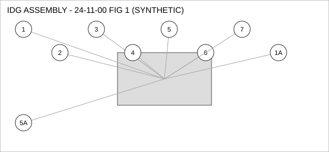
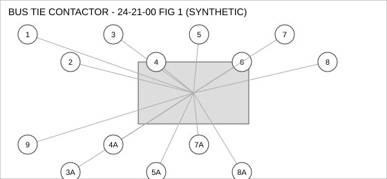
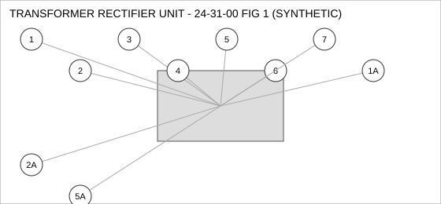

Document type: IPC | Revision: 15 | Fleet: A320
| CODE | AIRCRAFT |
|---|---|
| A | A320ceo |
| B | A320neo |
| C | A321neo |

| FIG ITEM | PART NUMBER | NOMENCLATURE | EFFECT | UPA |
|---|---|---|---|---|
| 1 | D24173076400 | HOSE ASSEMBLY, IDG ASSEMBLY | B C | 1 |
| SUPERSEDED BY D24753947800 | ||||
| 1A | D24753947800 | HOSE ASSEMBLY, IDG ASSEMBLY | B C | 1 |
| SUPERSEDES D24173076400. D24173076400 IS NOT INTERCHANGEABLE WITH THIS PART (ONE-WAY). | ||||
| 2 | D28043735300 | SENSOR - TEMPERATURE, IDG ASSEMBLY | C | 2 |
| 3 | D26716526800 | VALVE - CHECK, IDG ASSEMBLY | ALL | 4 |
| 4 | D20876573900 | BRACKET - MOUNTING, IDG ASSEMBLY | ALL | 1 |
| 5 | D28473121900 | SEAL - FLANGE, IDG ASSEMBLY | B C | 4 |
| 5A | D27355750100 | SEAL - FLANGE, IDG ASSEMBLY | B C | 4 |
| INTERCHANGEABLE WITH D28473121900 WHEN SB 24-3109 IS EMBODIED. | ||||
| 6 | D26651059700 | VALVE - SHUTOFF, IDG ASSEMBLY | ALL | 1 |
| 7 | D27654163000 | WASHER - LOCK, IDG ASSEMBLY | C | 1 |

| FIG ITEM | PART NUMBER | NOMENCLATURE | EFFECT | UPA |
|---|---|---|---|---|
| 1 | D25493000800 | BRACKET - MOUNTING, BUS TIE CONTACTOR | ALL | 1 |
| 2 | D26580150900 | SEAL - O-RING, BUS TIE CONTACTOR | A | 2 |
| 3 | D20581326300 | PUMP - TRANSFER, BUS TIE CONTACTOR | ALL | 4 |
| 3A | D20552302200 | PUMP - TRANSFER, BUS TIE CONTACTOR | ALL | 4 |
| INTERCHANGEABLE WITH D20581326300 WHEN SB 24-1042 IS EMBODIED. | ||||
| 4 | D22675089800 | FILTER ELEMENT, BUS TIE CONTACTOR | ALL | 1 |
| SUPERSEDED BY D22960209900 | ||||
| 4A | D22960209900 | FILTER ELEMENT, BUS TIE CONTACTOR | ALL | 1 |
| REPLACES D22675089800. THIS PART MAY REPLACE D22675089800; D22675089800 MAY NOT BE USED TO REPLACE THIS PART. | ||||
| 5 | D21209362900 | COUPLING - QUICK DISCONNECT, BUS TIE CONTACTOR | C | 4 |
| SUPERSEDED BY D23868392500 | ||||
| 5A | D23868392500 | COUPLING - QUICK DISCONNECT, BUS TIE CONTACTOR | C | 4 |
| REPLACES D21209362900. THIS PART MAY REPLACE D21209362900; D21209362900 MAY NOT BE USED TO REPLACE THIS PART. | ||||
| 6 | D29048460100 | SENSOR - PRESSURE, BUS TIE CONTACTOR | ALL | 1 |
| 7 | D24015831900 | VALVE - CHECK, BUS TIE CONTACTOR | ALL | 1 |
| SUPERSEDED BY D25173269800 | ||||
| 7A | D25173269800 | VALVE - CHECK, BUS TIE CONTACTOR | ALL | 1 |
| SUPERSEDES D24015831900. D24015831900 IS NOT INTERCHANGEABLE WITH THIS PART (ONE-WAY). | ||||
| 8 | D29583439100 | SOLENOID, BUS TIE CONTACTOR | ALL | 2 |
| 8A | D22443156900 | SOLENOID, BUS TIE CONTACTOR | C | 2 |
| ALTERNATE FOR D29583439100 ON A321NEO ONLY. | ||||
| 9 | D24364769200 | SWITCH - PRESSURE, BUS TIE CONTACTOR | ALL | 1 |

| FIG ITEM | PART NUMBER | NOMENCLATURE | EFFECT | UPA |
|---|---|---|---|---|
| 1 | D20628041800 | COUPLING - QUICK DISCONNECT, TRANSFORMER RECTIFIER UNIT | ALL | 1 |
| 1A | D28178239800 | COUPLING - QUICK DISCONNECT, TRANSFORMER RECTIFIER UNIT | C | 1 |
| ALTERNATE FOR D20628041800 ON A321NEO ONLY. | ||||
| 2 | D22427166600 | SWITCH - PRESSURE, TRANSFORMER RECTIFIER UNIT | ALL | 2 |
| 2A | D24886944000 | SWITCH - PRESSURE, TRANSFORMER RECTIFIER UNIT | ALL | 2 |
| ALTERNATE FOR D22427166600. PARTS ARE INTERCHANGEABLE. | ||||
| 3 | D24807289500 | DUCT - FLEXIBLE, TRANSFORMER RECTIFIER UNIT | B C | 1 |
| 4 | D21399998100 | SENSOR - PRESSURE, TRANSFORMER RECTIFIER UNIT | ALL | 2 |
| 5 | D20653085500 | SEAL - FLANGE, TRANSFORMER RECTIFIER UNIT | ALL | 1 |
| SUPERSEDED BY D22778801500 | ||||
| 5A | D22778801500 | SEAL - FLANGE, TRANSFORMER RECTIFIER UNIT | ALL | 1 |
| SUPERSEDES D20653085500. D20653085500 IS NOT INTERCHANGEABLE WITH THIS PART (ONE-WAY). | ||||
| 6 | D28922474000 | WASHER - LOCK, TRANSFORMER RECTIFIER UNIT | ALL | 2 |
| 7 | D23420994000 | CLAMP - V-BAND, TRANSFORMER RECTIFIER UNIT | A B | 2 |